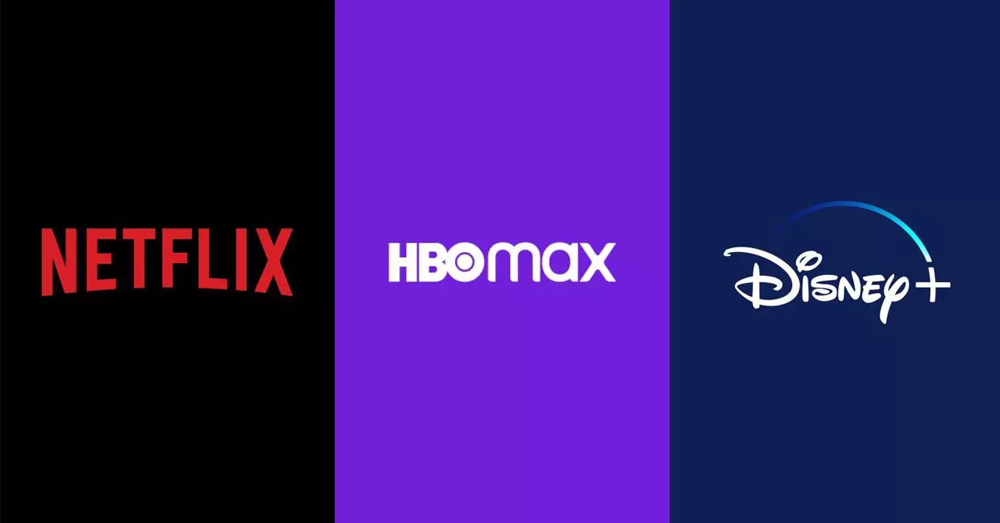

NETFLIX

Series Favoritas De Mis Amistades
comenzar 
La magia y las travesuras marcan el rumbo de Sabrina, una adolescente de doble naturaleza que se debate entre el mundo de los mortales y el que se oculta debajo
Los Bridgerton es una serie que cuenta desde una perspectiva feminista una historia de amor durante el Período de Regencia en el Reino Unido. La ficción indaga en las vidas ricas, divertidas, tristes, sexuales, magnificas e incluso solitarias de las mujeres y hombres de la alta sociedad londinense
Esta historia de amor entre dos chicos, uno de ellos declaradamente homosexual y el otro en vías de autodescubrimiento, nos recordaráque hay primeros amores frágiles como el cristal y memorables como el diamante.
Es una serie Manga que cuenta la historia de un joven ninja hiperactivo llamado Naruto Uzumaki que hará todo lo posible por ascender al máximo grado ninja de su aldea con el propósito de ser reconocido como alguien importante dentro de su aldea. Dentro de él reside encerrado en su interior el Zorro de Nueve Colas (Kyubi), un demonio que atacó a la Aldea Oculta de la Hoja matando a muchas personas.
Es muy entretenida, es muy emocionante y cómica. Todo adolescente tiene que verla, un mensaje claro, unos personajes muy memoriales y una historia demasiado buena.

La historia arranca durante la década de los 80, en el pueblo ficticio de Hawkins, Indiana, cuando un niño llamado Will Byers desaparece misteriosamente, hecho que destapa los extraños sucesos que tienen lugar en la zona, producto de una serie de experimentos que realiza el gobierno en un laboratorio científico

Es la historia de dos adolescentes que se encuentran, sencillamente, por una compatibilidad emocional extrema. Uno de ellos tiene un enorme vacío que lo empuja a la automutilación y las tendencias sociopáticas. La otra es demasiado sensible y su exceso violento de emociones la aleja de todo y de todos. Juntos, encuentran un extraño propósito autosuficiente y ahí en donde habitaba el odio, nace un amor de destino trágico

La historia se centra en los conflictos que existían en el grupo desde el principio, basándose en la vida de Vanya Hargreeves (00.07), en la rivalidad entre Diego (00.02) y Luther (00.01), y en cómo la Academia fue preparada desde la infancia para acabar con una amenaza que trataría de destruir el mundo.
La serie You trata sobre un joven que utiliza su carisma, encanto e inteligencia para hacer que la chica de sus sueños se enamore de él. Sin embargo, cambia de musa con frecuencia, después de desarrollar conductas obsesivas y comportamientos tóxicos que lo empujan a cometer crímenes nefastos
Esta historia que se enmarca dentro del género dramático sigue a un grupo de adolescentes estudiantes de secundaria, que sumergidos en el fatídico mundo de las drogas, el sexo y la violencia tratan de luchar contra esos monstruos para enfrentarse a un nuevo futuro.

The Big Bang Theory centra su argumento en las peripecias de cuatro jóvenes científicos tan inteligentes como torpes en la vida social. Trabajan en el California Institute of Technology, el célebre CalTech con sede en Pasadena.

The Flight Attendant es una serie histriónica y llena de momentos de locura máxima. Una serie que gira en torno a un homicidio, pero que acaba mezclando distintos géneros, haciendo de ella una de las series más particulares de este final de año.

La serie de Ladybug, es protagonizada por dos superhéroes: Ladybug y Chat Noir. Ambos personajes tienen una “doble vida”, son estudiantes de secundaria y cuando se requiere, pueden convenirse en superhéroes gracias a los Miraculous que poseen. Su objetivo es proteger de todo el mal a París

La serie de Ladybug, es protagonizada por dos superhéroes: Ladybug y Chat Noir. Ambos personajes tienen una “doble vida”, son estudiantes de secundaria y cuando se requiere, pueden convenirse en superhéroes gracias a los Miraculous que poseen. Su objetivo es proteger de todo el mal a París

Soy Luna se centra en Luna Valente, una estudiante mexicana cuya mayor pasión es patinar. Vive en una ciudad costera tranquila y pasa mucho tiempo con su amigo Simón, compositor de música. La vida de la protagonista es perfecta hasta que sus padres aceptan un nuevo trabajo en Argentina.